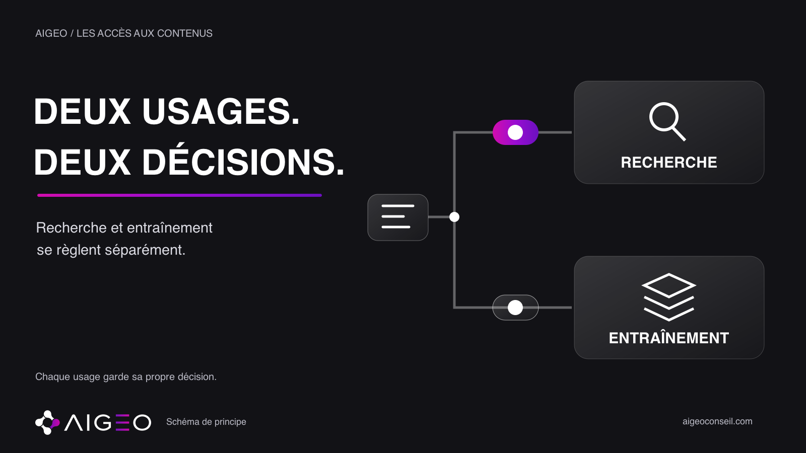
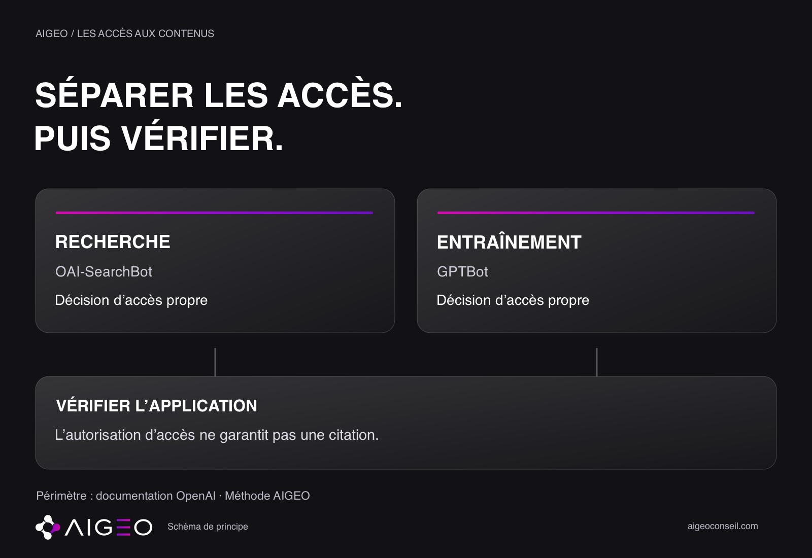

Faut-il bloquer les robots IA sur notre site ? Avant de changer un réglage, précisons l’objectif : quel usage voulons-nous autoriser ou limiter ? La formule « bloquer l’IA » ne donne pas une consigne assez claire à l’équipe technique.
Cette décision concerne l’exploration des pages de votre site. Elle mérite un échange entre la direction, qui exprime une intention, et la personne qui peut vérifier puis modifier les accès. La première question à poser à votre prestataire est simple : pouvons-nous décrire les usages concernés et les règles actuellement en place ?
## Deux usages, deux décisions
La documentation OpenAI distingue OAI-SearchBot, destiné à la recherche dans ChatGPT, et GPTBot, qui explore des contenus susceptibles de servir à l’entraînement des modèles. Leurs réglages dans robots.txt sont indépendants : une décision pour l’un n’impose pas la même décision pour l’autre.
Ce périmètre est celui des robots documentés par OpenAI. Il faut consulter les règles des autres fournisseurs avant d’étendre cette distinction. Une autorisation d’accès ne garantit pas qu’une page sera retenue dans une réponse, citée ou recommandée.
## Écrire la décision avant le réglage
Notre méthode AIGEO consiste à préparer une fiche courte : fournisseur, usage, règle actuelle à confirmer, décision souhaitée, responsable et date. Ces champs évitent de confondre trois étapes : ce que l’on veut, ce qui est configuré et ce qui a été vérifié.
Le fournisseur et l’usage précisent le périmètre. La règle actuelle décrit un état à contrôler. La décision souhaitée exprime l’arbitrage de l’entreprise. Le responsable et la date permettent de retrouver qui doit intervenir et quand la situation a été examinée. Si un champ manque, mieux vaut le laisser inconnu que déduire un état à partir d’une intention.
## Une situation fictive pour clarifier
Imaginons une agence de conseil : cet exemple est fictif. Son dirigeant souhaite limiter l’exploration de ses pages pour l’entraînement, tout en examinant séparément leur accès pour la recherche. L’équipe technique prépare les règles correspondant à cette volonté.
À ce stade, elle n’annonce ni réglage appliqué ni résultat de visibilité. Elle identifie les robots concernés, documente l’existant et propose le changement à effectuer. Le dirigeant peut alors relire une décision précise, au lieu de valider une consigne générale sur « les IA ».
On ne sait pas si la marque apparaîtra dans une réponse. Cet exemple illustre une préparation ; il ne raconte pas un test réalisé.

## Vérifier ce qui est appliqué
Conservez la configuration de départ et une trace de chaque modification. Demandez ensuite à l’équipe technique de contrôler les règles réellement appliquées, ainsi que les restrictions éventuelles de l’hébergement. Cette vérification doit porter sur la situation réelle du site.
Une fiche de décision prouve un arbitrage. Une configuration sauvegardée décrit un réglage. Un contrôle documenté apporte une observation sur son application. Ces éléments répondent à des questions différentes ; conserver chacun permet de reprendre le dossier sans reconstruire son historique.
Le présent article ne réalise aucun test ni scan. Le contrôle reste à effectuer par l’équipe concernée ; nous n’en annonçons pas le résultat.
## Garder la visibilité dans un relevé séparé
Pour suivre la présence de l’entreprise dans des réponses IA, conservez un relevé distinct des changements techniques. Notez la question posée, l’outil consulté, le contexte, la date réelle du relevé et la réponse accessible. Sans observation, ces informations restent inconnues.
Une autorisation ne confirme ni le passage d’un robot ni une citation. Une différence entre deux réponses ne suffit pas non plus à attribuer un effet au réglage. Gardez les éléments nécessaires à la comparaison, puis indiquez ce qui est effectivement constaté et ce qui reste à vérifier.
Cette séparation permet à la direction de suivre les décisions et les observations sans annoncer un progrès qui n’a pas encore été établi.
Demandez un état des accès par usage, daté et vérifié. Pour définir ensuite le périmètre d’un relevé de visibilité IA, retrouvez AIGEO sur aigeoconseil.com.
## Source
OpenAI — Présentation des robots d’exploration, consultée le 8 octobre 2026. La fiche de décision et les contrôles proposés sont une méthode AIGEO.
Sources consultées
- OpenAI — Présentation des robots d’exploration · vérifiée le 2026-10-08T10:56:29.075555+00:00